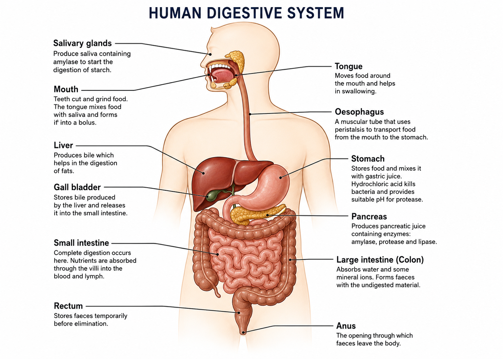

🍽️ 1. Nutrition
Nutrition is the process by which organisms obtain and use nutrients from food for energy, growth, repair and maintaining normal body functions.
Humans are unable to make all the substances they need, so they obtain nutrients by eating food.
🧠 Key Definition
Nutrition: The taking in of nutrients which are needed by an organism for energy, growth, repair and maintaining healthy body functions.
🥗 2. Nutrients in Food
The major nutrients required by the human body are carbohydrates, proteins, lipids, vitamins, mineral ions and water. Dietary fibre is also important for maintaining a healthy digestive system.
| Nutrient | Main Function | Common Sources |
|---|---|---|
| Carbohydrates | Main source of energy | Rice, bread, potatoes, maize, cassava, fruits |
| Proteins | Growth and repair of tissues | Eggs, fish, meat, beans, milk, groundnuts |
| Lipids | Energy store, insulation and protection | Vegetable oils, nuts, butter, avocado |
| Vitamins | Needed in small amounts for healthy body functions | Fruits, vegetables, milk and other foods |
| Mineral ions | Needed for growth and normal body functions | Vegetables, milk, meat, fish and other foods |
| Water | Solvent, transport and chemical reactions | Water, fruits, vegetables and drinks |
| Dietary fibre | Adds bulk to food and helps movement through the intestine | Fruits, vegetables, whole grains |
🍞 3. Carbohydrates
Carbohydrates are organic compounds made mainly from carbon, hydrogen and oxygen.
They include sugars such as glucose and larger molecules such as starch.
⚡ Functions of Carbohydrates
- Provide energy for respiration.
- Provide glucose needed by cells.
- Supply energy for movement.
- Supply energy for growth and repair processes.
- Provide energy for maintaining body temperature.
- Help power active transport and other energy-requiring processes.
Simple and Complex Carbohydrates
Simple carbohydrates include sugars such as glucose. Complex carbohydrates include starch, which is made from many glucose molecules.
Starch is digested into smaller molecules and eventually into glucose, which can be absorbed into the bloodstream.
🥚 4. Proteins
Proteins are large molecules made from amino acids. They contain carbon, hydrogen, oxygen and nitrogen.
🧬 Functions of Proteins
- Growth of the body.
- Repair of damaged tissues.
- Formation of muscles.
- Production of enzymes.
- Production of antibodies.
- Formation of some hormones and other important body substances.
- Replacement of worn-out cells.
- Can provide energy when necessary.
🥑 5. Lipids
Lipids include fats and oils. They contain carbon, hydrogen and oxygen and are important sources of stored energy.
🔋 Functions of Lipids
- Store large amounts of energy.
- Provide energy during respiration.
- Provide thermal insulation.
- Protect delicate organs from physical damage.
- Form part of cell membranes.
- Help the body absorb fat-soluble vitamins.
- Provide essential fatty acids needed by the body.
🍊 6. Vitamins and Mineral Ions
Vitamins and mineral ions are required in relatively small amounts, but they are essential for normal body functions.
Vitamin C
Vitamin C is important for maintaining healthy tissues and supporting normal body functions.
A lack of vitamin C can cause scurvy, which may result in bleeding gums, poor wound healing and weakness.
Vitamin D
Vitamin D helps the body absorb calcium and is important for the development and maintenance of strong bones and teeth.
A deficiency of vitamin D can cause rickets in children, resulting in poorly formed bones.
Calcium
Calcium is needed for strong bones and teeth. It is also involved in muscle contraction and other body processes.
Iron
Iron is needed for the production of haemoglobin in red blood cells.
Iron deficiency can cause anaemia, which reduces the blood's ability to transport oxygen.
💧 7. Water
Water is an essential nutrient and makes up a large proportion of the human body.
💧 Importance of Water
- Acts as a solvent for many substances.
- Provides the medium in which many chemical reactions occur.
- Helps transport dissolved substances around the body.
- Helps remove waste products from the body.
- Helps regulate body temperature.
- Forms part of body fluids such as blood plasma.
- Helps maintain normal cell function.
🌾 8. Dietary Fibre
Dietary fibre consists mainly of plant material that cannot be digested by human digestive enzymes.
🌾 Importance of Dietary Fibre
- Adds bulk to food.
- Helps food move through the intestine.
- Helps prevent constipation.
- Helps maintain a healthy digestive system.
- Increases the bulk of faeces.
- Stimulates movement of the intestine.
⚖️ 9. Balanced Diet
A balanced diet contains all the nutrients needed by the body in suitable amounts for a particular person's needs.
The exact amount of food required varies with factors such as age, sex, activity level and health.
⭐ Features of a Balanced Diet
- Contains carbohydrates for energy.
- Contains proteins for growth and repair.
- Contains suitable amounts of lipids.
- Provides vitamins.
- Provides mineral ions.
- Provides sufficient water.
- Provides dietary fibre.
- Provides an appropriate amount of energy for the person's needs.
⚠️ 10. Malnutrition and Deficiency Diseases
Malnutrition occurs when a person's diet does not provide the correct amount or balance of nutrients.
| Nutrient | Deficiency | Possible Effect |
|---|---|---|
| Vitamin C | Vitamin C deficiency | Scurvy |
| Vitamin D | Vitamin D deficiency | Rickets in children |
| Calcium | Low calcium intake | Weak bones and teeth |
| Iron | Iron deficiency | Anaemia |
| Protein | Severe protein deficiency | Poor growth and tissue repair |
🧪 11. Digestion
Large food molecules such as starch, proteins and lipids are generally too large to pass through the wall of the small intestine into the bloodstream.
Digestion breaks these large, insoluble molecules into smaller, soluble molecules that can be absorbed.
🧠 Key Definition
Digestion: The breakdown of large, insoluble food molecules into smaller, soluble molecules that can be absorbed.
⚙️ 12. Mechanical and Chemical Digestion
Mechanical Digestion
Mechanical digestion is the physical breakdown of food into smaller pieces without changing the chemical nature of the food.
An important example is chewing in the mouth. The teeth break food into smaller pieces and the tongue helps mix it with saliva.
Chemical Digestion
Chemical digestion involves enzymes breaking large food molecules into smaller molecules.
Chemical digestion changes the chemical composition of the food.
🫀 13. Human Digestive System
The human digestive system consists of a series of organs through which food passes, together with organs that produce substances involved in digestion.
🖼️ Digestive System Diagram
The diagram below shows the main organs of the human digestive system.

Important: Learn the position and function of each major organ shown in the diagram.
👄 14. Mouth
Digestion begins in the mouth.
Teeth
Teeth carry out mechanical digestion by cutting, tearing and grinding food into smaller pieces.
Tongue
The tongue moves food around the mouth, mixes it with saliva and helps form the food into a bolus that can be swallowed.
Salivary Glands
Salivary glands produce saliva, which moistens food and contains the enzyme amylase.
🧪 15. Amylase
Amylase is a digestive enzyme produced by the salivary glands and also by the pancreas.
🔬 Enzyme to Remember
Amylase catalyses the breakdown of starch into smaller sugars such as maltose.
Substrate: Starch
Product: Maltose
Amylase works in the mouth and continues to act in the small intestine when pancreatic juice enters it.
👅 16. Swallowing and Oesophagus
After chewing and mixing with saliva, food is swallowed.
The tongue pushes the food towards the back of the mouth. The food then enters the oesophagus.
Peristalsis
Peristalsis is a series of wave-like muscular contractions that move food along the digestive tract.
🧠 Key Definition
Peristalsis: The rhythmic contraction and relaxation of muscles in the wall of the alimentary canal that moves food along the gut.
🥣 17. Stomach
The stomach is a muscular organ that stores food temporarily and mixes it with gastric juice.
🧪 Functions of the Stomach
- Stores food temporarily.
- Churns and mixes food.
- Produces hydrochloric acid.
- Provides acidic conditions for protease activity.
- Helps kill many microorganisms swallowed with food.
- Begins significant protein digestion.
- Releases partially digested food gradually into the small intestine.
🧬 18. Protease Enzymes
Proteases are enzymes that digest proteins into smaller molecules.
In the Stomach
The stomach contains the protease pepsin. Pepsin begins the digestion of proteins in the acidic conditions of the stomach.
In the Small Intestine
Proteases from the pancreas and small intestine continue protein digestion.
The final products of protein digestion are amino acids.
🧪 Protein Digestion
Protein → smaller peptides → amino acids
The amino acids are small and soluble enough to be absorbed through the wall of the small intestine.
🟤 19. Liver and Bile
The liver produces bile. Bile is stored in the gall bladder and released into the small intestine.
Bile is not an enzyme. It helps digestion by breaking large fat globules into much smaller droplets.
Emulsification
Emulsification increases the surface area of fat available for lipase enzymes to act on.
⭐ Functions of Bile
- Emulsifies fats into small droplets.
- Increases the surface area of fats.
- Makes fat digestion by lipase more efficient.
- Helps neutralise acidic food entering the small intestine from the stomach.
- Provides a more suitable alkaline environment for intestinal and pancreatic enzymes.
- Helps the efficient digestion of lipids.
🧪 20. Pancreas
The pancreas produces pancreatic juice, which contains digestive enzymes.
🧪 Pancreatic Enzymes
- Amylase digests starch.
- Proteases digest proteins and peptides.
- Lipase digests lipids.
🧬 21. Small Intestine
The small intestine is the main site where digestion is completed and where most absorption of digested nutrients takes place.
Digestive juices from the pancreas and the wall of the small intestine complete the digestion of carbohydrates, proteins and lipids.
🍬 22. Maltase and Carbohydrate Digestion
Amylase breaks starch into smaller sugars including maltose. Maltase, produced by the small intestine, then breaks maltose down into glucose.
🧪 Carbohydrate Digestion
Starch → maltose → glucose
Amylase acts on starch, while maltase acts on maltose.
🥑 23. Lipase and Fat Digestion
Lipase is the enzyme responsible for digesting lipids.
Bile first emulsifies fats into small droplets. Lipase then acts on the fats.
🧪 Lipid Digestion
Lipids → fatty acids + glycerol
Remember that bile does not digest fat. It emulsifies fat, while lipase chemically digests it.
🔬 24. Digestive Enzymes — Master Table
| Enzyme | Substrate | Product | Main Site |
|---|---|---|---|
| Amylase | Starch | Maltose | Mouth / Small intestine |
| Maltase | Maltose | Glucose | Small intestine |
| Protease | Proteins / peptides | Smaller peptides / amino acids | Stomach / Small intestine |
| Lipase | Lipids | Fatty acids + glycerol | Small intestine |
🧪 25. Enzymes
Enzymes are biological catalysts. They speed up chemical reactions in living organisms without being used up in the reaction.
⭐ Important Enzyme Facts
- Enzymes are biological catalysts.
- They speed up chemical reactions.
- They are not used up during the reaction.
- Each enzyme has a specific substrate.
- Enzymes work best at particular temperatures.
- Enzymes work best at particular pH values.
- Very high temperatures can denature enzymes.
- Extreme pH can also denature enzymes.
🔐 26. Enzyme Specificity
Enzymes have an active site with a particular shape. The substrate fits into this active site.
This means an enzyme can only act on a suitable substrate.
🧠 Key Idea
The shape of an enzyme's active site is complementary to the shape of its substrate.
This explains why enzymes are described as specific.
🌡️ 27. Effect of Temperature on Enzymes
Increasing temperature generally increases the rate of enzyme activity up to an optimum temperature.
Above the optimum temperature, the enzyme may become denatured and its activity rapidly decreases.
📈 Exam Explanation
At higher temperatures, enzyme and substrate molecules move faster and collide more frequently. This increases the rate of reaction up to the optimum temperature.
At very high temperatures, bonds maintaining the enzyme's shape are disrupted. The active site changes shape and the substrate can no longer fit properly.
🧪 28. Effect of pH on Enzymes
Different enzymes work best at different pH values.
For example, pepsin in the stomach works well in acidic conditions, while many enzymes in the small intestine work best in alkaline or near-neutral conditions.
Extreme pH can change the shape of an enzyme and cause denaturation.
🩸 29. Absorption
Absorption is the movement of small, soluble digested food molecules through the wall of the small intestine into the blood or lymph.
🧠 Key Definition
Absorption: The movement of digested, soluble food molecules through the wall of the small intestine into the blood or lymph.
🔬 30. Villi
The inner surface of the small intestine contains millions of tiny finger-like projections called villi. Each villus increases the surface area available for absorption.
⭐ Adaptations of the Small Intestine for Absorption
- It is very long, providing a large area for absorption.
- It contains many villi.
- Villi greatly increase surface area.
- The villus wall is very thin, allowing a short diffusion distance.
- Villi contain a rich network of blood capillaries.
- The good blood supply helps maintain concentration gradients.
- Each villus contains a lacteal for the absorption of products of lipid digestion.
🧬 31. Products of Digestion
| Food Molecule | Digested Into | Absorption |
|---|---|---|
| Starch | Glucose | Into blood capillaries |
| Proteins | Amino acids | Into blood capillaries |
| Lipids | Fatty acids + glycerol | Mainly through the lacteals |
🔄 32. Assimilation
After absorption, the digested nutrients are transported to cells where they are used.
🧠 Key Definition
Assimilation: The incorporation and use of absorbed nutrients by cells.
For example, glucose can be used in respiration to release energy, while amino acids can be used to build new proteins.
💧 33. Large Intestine
Material that has not been digested passes from the small intestine into the large intestine.
💧 Functions of the Large Intestine
- Absorbs water from the remaining material.
- Helps form solid faeces.
- Absorbs some dissolved mineral ions.
- Houses many bacteria.
- Helps compact undigested material.
- Moves faeces towards the rectum.
🚻 34. Rectum, Anus and Egestion
Faeces are stored temporarily in the rectum. They are eventually removed from the body through the anus.
🧠 Key Definition
Egestion: The removal of undigested food and other indigestible material from the digestive tract through the anus.
Egestion is different from excretion.
Egestion removes undigested food from the digestive tract, while excretion removes metabolic waste products produced by cells.
🛣️ 35. Journey of Food Through the Digestive System
📚 Learn This Order
Mouth → Oesophagus → Stomach → Small intestine → Large intestine → Rectum → Anus
Remember that the liver, gall bladder and pancreas are accessory organs. Food does not pass through these organs, but their secretions help digestion.
🧩 36. Accessory Digestive Organs
| Organ | Main Role |
|---|---|
| Salivary glands | Produce saliva containing amylase. |
| Liver | Produces bile. |
| Gall bladder | Stores and releases bile. |
| Pancreas | Produces pancreatic juice containing digestive enzymes. |
🧠 37. Complete Digestion Summary
🔬 Carbohydrates
Starch is broken down by amylase into smaller sugars such as maltose. Maltase then breaks maltose into glucose.
🧬 Proteins
Proteins are broken down by proteases into smaller peptides and eventually amino acids.
🥑 Lipids
Bile emulsifies fats into small droplets. Lipase then breaks lipids into fatty acids and glycerol.
🔄 38. Absorption vs Assimilation
| Absorption | Assimilation |
|---|---|
| Movement of digested nutrients into blood or lymph. | Use of absorbed nutrients by cells. |
| Mainly occurs in the small intestine. | Occurs in body cells and tissues. |
📖 39. Important Definitions to Know
- Nutrition: Taking in nutrients needed by the body.
- Digestion: Breakdown of large, insoluble food molecules into smaller, soluble molecules.
- Enzyme: A biological catalyst that speeds up chemical reactions.
- Peristalsis: Wave-like muscular contractions that move food along the alimentary canal.
- Absorption: Movement of digested nutrients through the small intestine wall into blood or lymph.
- Assimilation: Use and incorporation of absorbed nutrients by cells.
- Egestion: Removal of undigested material from the digestive tract.
- Emulsification: Breaking large fat globules into smaller droplets.
🎯 40. O/L GCE Exam Focus
⭐ Make Sure You Can:
- Define nutrition and digestion.
- State the functions of carbohydrates, proteins and lipids.
- Explain what makes a diet balanced.
- Identify common nutrient deficiency diseases.
- Describe mechanical digestion.
- Explain the role of digestive enzymes.
- State the substrates and products of digestive enzymes.
- Explain the role of bile.
- Explain why bile is not an enzyme.
- Describe the functions of the stomach, small intestine and large intestine.
- Explain peristalsis.
- Explain how villi are adapted for absorption.
- Distinguish between absorption and assimilation.
- Distinguish between egestion and excretion.
- Identify the major organs of the digestive system.
❌ 41. Common O/L Mistakes
⚠️ Do Not Confuse These
- Bile is not an enzyme.
- Bile emulsifies fats; it does not chemically digest them.
- Lipase digests lipids.
- Amylase digests starch.
- Proteases digest proteins.
- Maltase converts maltose into glucose.
- Absorption is not the same as assimilation.
- Egestion is not the same as excretion.
⚡ 42. Quick Revision
🍽️ Nutrition
Food provides nutrients needed for energy, growth, repair and healthy body functions.
🧪 Digestion
Large insoluble molecules are broken down into small soluble molecules.
🔬 Enzymes
Amylase → starch → maltose
Maltase → maltose → glucose
Protease → protein → amino acids
Lipase → lipids → fatty acids + glycerol
🩸 Absorption
Digested nutrients pass through the wall of the small intestine, especially through the villi.
🔄 Assimilation
Cells use absorbed nutrients for energy, growth, repair and other functions.
✅ 43. Final Exam Checklist
Before moving to the next Biology topic, make sure you can explain the following without looking at your notes:
- The major nutrients and their functions.
- What makes a balanced diet.
- Examples of deficiency diseases.
- The difference between mechanical and chemical digestion.
- The complete pathway of food through the digestive system.
- The functions of the major digestive organs.
- The functions of amylase, maltase, protease and lipase.
- The role of hydrochloric acid in the stomach.
- The role of bile and emulsification.
- How temperature and pH affect enzymes.
- How villi are adapted for absorption.
- The difference between absorption, assimilation, egestion and excretion.